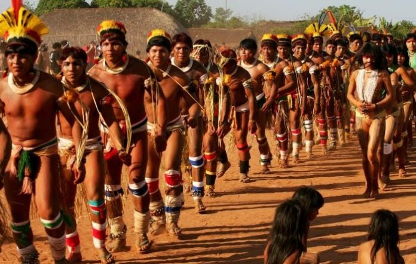

Região leste
Gamela
Povo em processo de retomada étnica e territorial na região de Viana, lutando pelo reconhecimento de sua ancestralidade.
Língua
Retomada
População
1.500

Localização no Maranhão
Cultura e Tradição
O povo Gamela possui uma cosmovisão única, profundamente ligada aos ciclos da natureza e à preservação de suas terras ancestrais no Maranhão. Suas tradições orais são o pilar de sua resistência, transmitindo conhecimentos sobre medicina tradicional, rituais sagrados e a história de seus antepassados.
Luta e Território
Localizados na região leste do estado, os Gamela enfrentam desafios contemporâneos para a proteção de seus territórios contra invasões e o desmatamento. O Projeto Yarã atua como um aliado tecnológico na documentação de sua língua e na amplificação de suas vozes para o mundo.